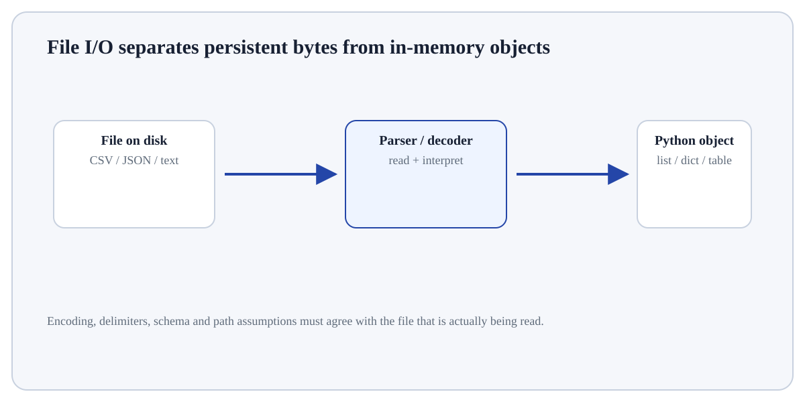

Read and Write JSON concerns moving information between Python's in-memory objects and persistent files.
ConceptWorked examplePracticeKnowledge check
Textbook walkthrough
What Read and Write JSON actually means
Read and Write JSON concerns moving information between Python's in-memory objects and persistent files. File handling requires explicit decisions about path, format, encoding, schema and what should happen when data are missing or malformed.
Read and Write JSON matters because files are a boundary between in-memory Python objects and persistent external data. Paths, encodings, formats and cleanup rules can change the meaning or integrity of data even when the core calculation is correct.
Deeper walkthrough
Read Read and Write JSON as a mechanism, not a recipe
Treat this as a sequence of observable decisions rather than one opaque command. Stage 1: Resolve the path with pathlib instead of assuming the working directory. Stage 2: Open text with an explicit encoding such as UTF-8 when portability matters. Stage 3: Parse structured formats with format-aware tools rather than manual string splitting. Final checkpoint: Write outputs to a deliberate location and avoid overwriting source data unless that is intended.
Mechanism
Follow the transformation
Resolve the path with pathlib instead of assuming the working directory.
Open text with an explicit encoding such as UTF-8 when portability matters.
Parse structured formats with format-aware tools rather than manual string splitting.
Evidence
Know what would convince you
Inspect the resolved path/environment and confirm it points to the intended location/interpreter.
Round-trip a tiny artifact: write/export/install, then read/import it independently and compare key values or versions.
Useful distinctionText: Raw character stream; structure is application-specific.

Visual demonstration: use the diagram to trace the main objects and state changes involved in Read and Write JSON.
Click a stage to inspect what happens, what changes, and what should be checked before moving on.
Stage 1
Resolve the path with pathlib instead…
Resolve the path with pathlib instead of assuming the working directory. For Read and Write JSON, identify the exact state before this stage, the operation or rule applied here, and the observable state afterwards so the mechanism remains inspectable.
State focus: identify exactly what changed at this stage and what observable evidence confirms that change.
How it works
Trace the mechanism step by step
Resolve the path with pathlib instead of assuming the working directory.
Open text with an explicit encoding such as UTF-8 when portability matters.
Parse structured formats with format-aware tools rather than manual string splitting.
Validate required columns/fields before analysis.
Write outputs to a deliberate location and avoid overwriting source data unless that is intended.
Worked demonstration
Make the concept concrete
Demonstration
Python example
# Step 1 — Import only the named objects needed by the following steps, keeping dependencies explicit.
from pathlib import Path
# Step 2 — Import the module so its functions/classes are available to the rest of this example.
import csv
# Step 3 — Compute the right-hand expression and store its result in `path` for the next step.
path = Path("sales.csv")
# Example reader pattern; validate columns before using rows.
# Step 4 — Open/manage this resource with a context manager so cleanup happens automatically when the block ends.
with path.open(encoding="utf-8", newline="") as fh:
# Step 5 — Compute the right-hand expression and store its result in `rows` for the next step.
rows = list(csv.DictReader(fh))
# Step 6 — Compute the right-hand expression and store its result in `required` for the next step.
required = {"product", "sales"}
# Step 7 — Evaluate this condition and execute the indented branch only when the condition is true.
if rows and not required <= rows[0].keys():
# Step 8 — Raise an explicit exception to signal that the required condition or input contract was violated.
raise ValueError("required columns are missing")
# Step 9 — Display the current value explicitly so the result/state can be inspected during execution.
print("rows:", len(rows))
Expected / illustrative result
rows: <number of data rows in sales.csv>
Interpret the result.
For Read and Write JSON, connect the displayed result to the specific input and mechanism above; independently verify one value/state change rather than treating successful execution as proof.
Distinctions & related ideas
Know what this is — and what it is not
TextRaw character stream; structure is application-specific.
CSVTabular rows/columns; types are not stored robustly and quoting must be respected.
JSONNested objects/arrays with strings, numbers, booleans and null.
Binary formatsOften preserve richer types or compactness but require format-specific readers.
Use deliberately
When it is appropriate
Use Read and Write JSON when data or code must cross a file-system, package or environment boundary and that boundary is part of the program’s contract.
Boundary conditions
When to stop or reconsider
Reconsider the approach when the path, encoding, file format, dependency source or active interpreter is ambiguous; make those choices explicit before automating the workflow.
Common mistakes
Failure modes to recognise
Assuming the current working directory or active Python environment is the one you intended.
Relying on a default text encoding or file-format convention that changes across systems.
Writing or installing successfully without reading back, importing, or otherwise validating the produced artifact.
Verification
How to check the result
Inspect the resolved path/environment and confirm it points to the intended location/interpreter.
Round-trip a tiny artifact: write/export/install, then read/import it independently and compare key values or versions.
Test one missing-file, malformed-input or dependency-conflict case so failure behaviour is deliberate.
Hands-on practice
Demonstrate understanding
Try this:
Build a tiny, inspectable example of Read and Write JSON. First resolve the path with pathlib instead of assuming the working directory. Then open text with an explicit encoding such as UTF-8 when portability matters. Write the expected result before running it, and explain one condition that would make the result misleading or invalid.
Use one tiny file/module and an explicit path or environment. Validate the artifact by loading/importing it again rather than trusting a successful command.
Knowledge check
Check reasoning, not memorisation
Before trusting a result from Read and Write JSON, which check provides the strongest evidence that you understand and applied it correctly?
Quick reference
Keep the important distinctions visible
Step 1Resolve the path with pathlib instead of assuming the working directory.
Step 2Open text with an explicit encoding such as UTF-8 when portability matters.
Step 3Parse structured formats with format-aware tools rather than manual string splitting.
Step 4Validate required columns/fields before analysis.
Lesson summary
What to remember
Read and Write JSON concerns moving information between Python's in-memory objects and persistent files. File handling requires explicit decisions about path, format, encoding, schema and what should happen when data are missing or malformed.
Resolve the path with pathlib instead of assuming the working directory.
Assuming the current working directory or active Python environment is the one you intended.
Inspect the resolved path/environment and confirm it points to the intended location/interpreter.